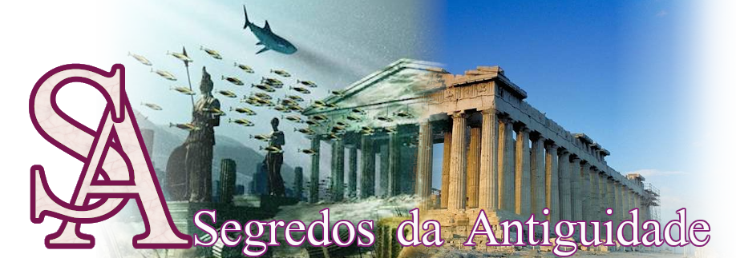

The Code
The Code é um documentário da BBC produzido em 2011, apresentado pelomatemático Marcus du Sautoy. Sua premissa é apresentar um código que seria capaz de explicar eventos passados e futuros, através da compreensão de padrões numéricos que regem nossa vida. Mas será que a série, em três episódios, entrega o que promete? Leia mais.
Mistério Obscuro
Unacklowledged, como é intitulado em inglês, é um documentário da Auroris Media de 1h40min onde são reveladas várias informações sobre a existência e aparições de OVNIs, assim como as conspirações para evitar o vazamento dessas informações. Em um assunto tão polêmico, será a abordagem séria e profunda o suficiente para prender o telespectador?Leia mais.